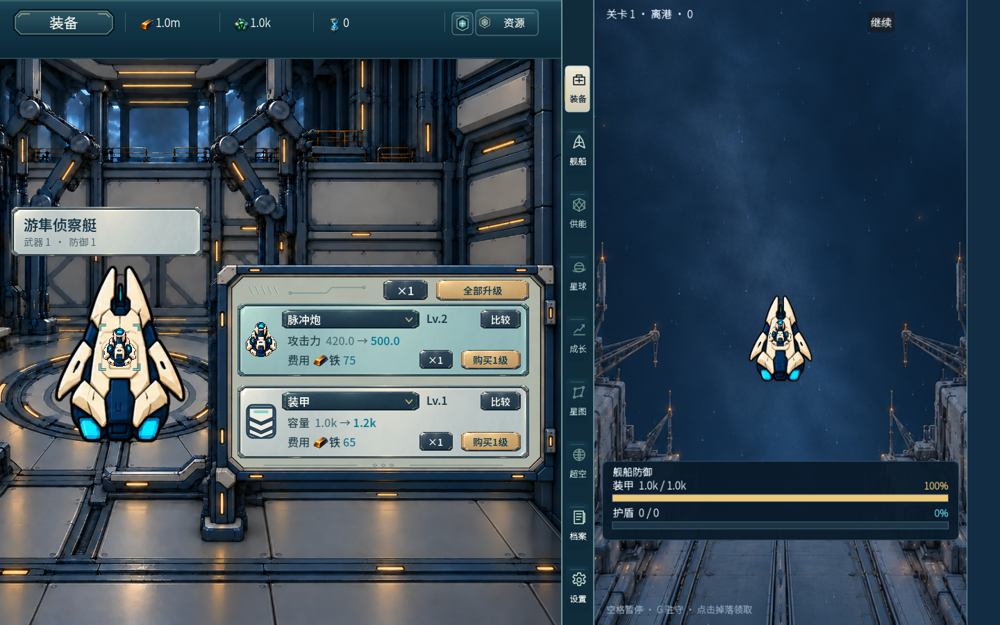
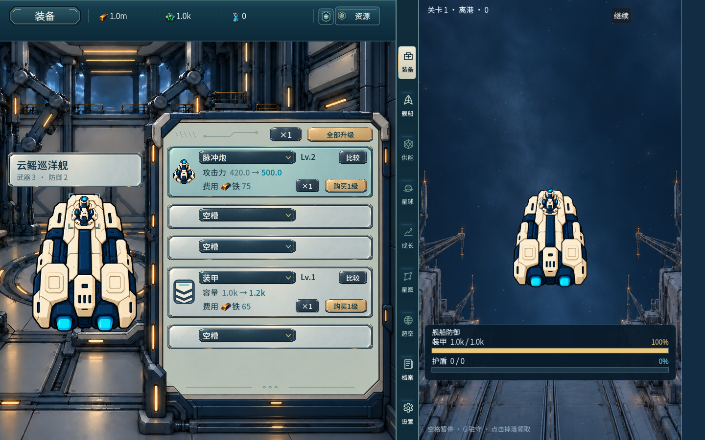
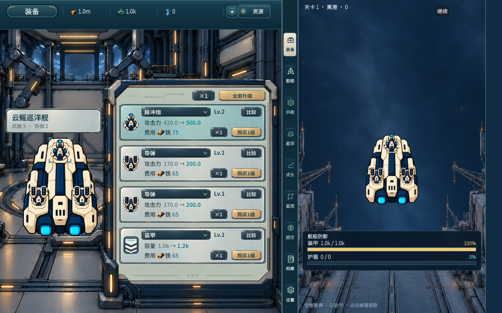
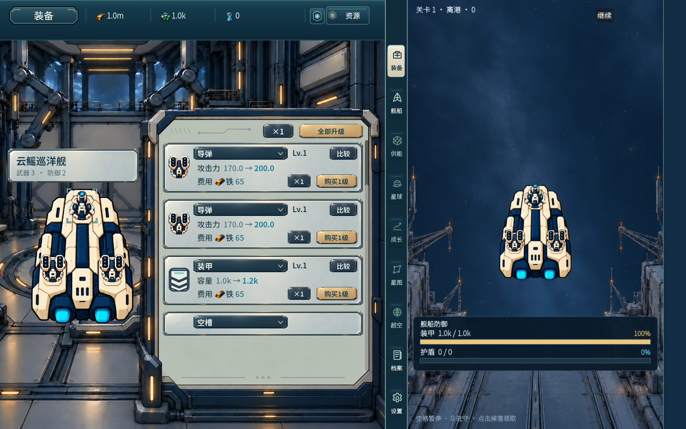
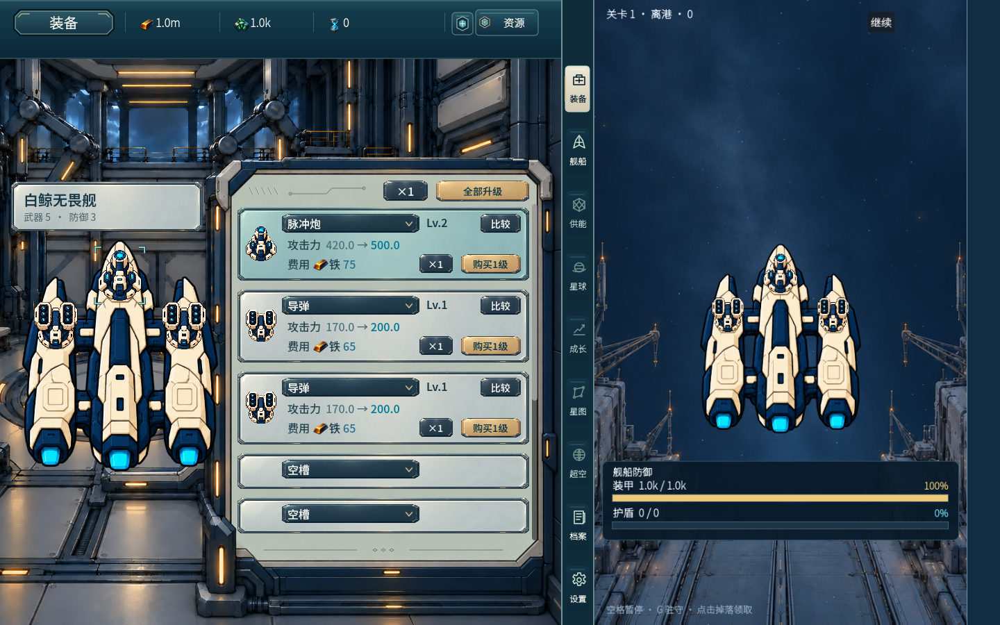
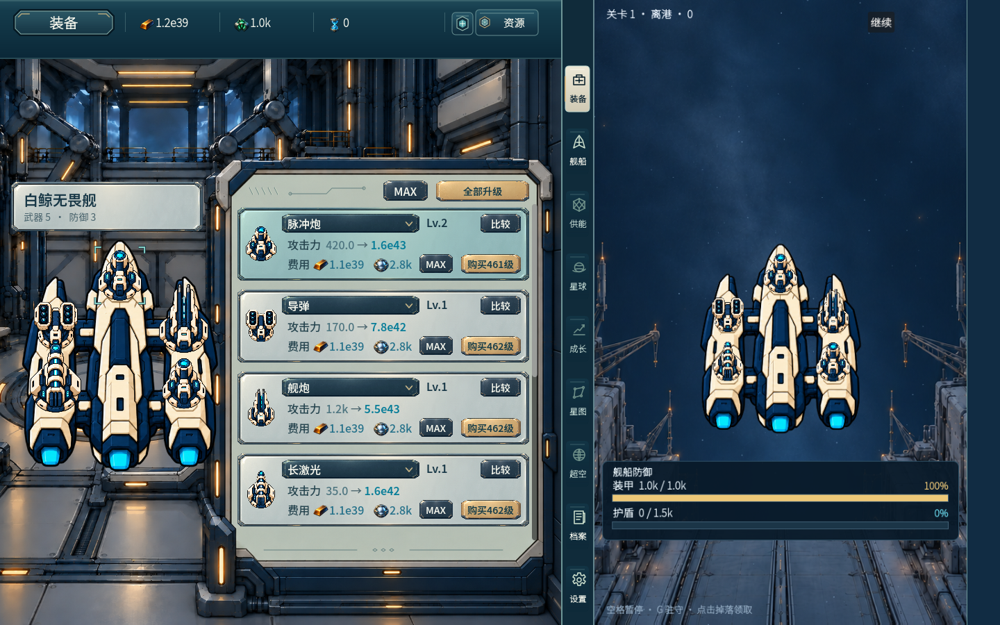
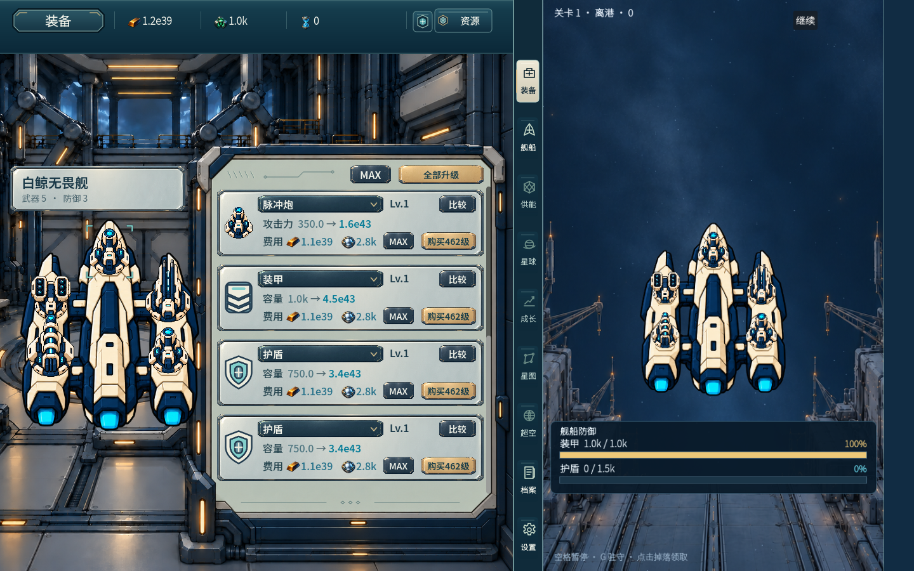
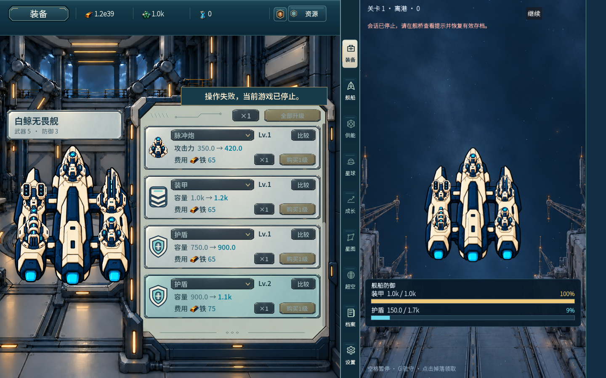

07-long-max-bottom.png

本轮按原审核者新增顶部带阻断返修，固定生产源5050378c41ec3eb015eb039aa31d71b0d523915e。只作者同线程受影响实机/视觉自查，交既有根/原审判断；未独立审/用户/main通过。
根因：旧长满槽内容940、可见区484、最大滚动456；整行可见策略隐藏首残行后，下一完整卡row_y476使首卡屏幕y314，较顶部y298下移16，按钮底至首卡Rect净空从8变24。
修正：短/长台固定原顶部操作带，不整体挪两键；按实际106/52混合卡高建立完整行起点与可容纳的末组，剩余高度归末组底部安全留白。滚轮/滚动条停在真实行起点；最后完整行组首卡与顶部沿相同起线。全满长台停止点0/118/236/354/472，首卡恒y298、按钮底至卡Rect恒8；混合中期0/118两端也恒8。短台保持原位置/光学边框关系，不强套统一像素。混合末页的剩余高度可能形成较大的底部留白，未塞入半行或让装饰掩盖。
真实main/native/config，最终录制运行0失败；覆盖短台无滚动端点、中期混合卡高顶/底、晚期混合首屏、长MAX真实滚轮逐站下/上、真实scrollbar最大端点、底部模式只报价、底部可见槽真实购买+1、未知日志/冻结/比较禁用仍保。进度与钱包是受控Owner状态，换舰/装备经实际Owner发布；未知是显式publisher注入，不称真实native故障或自然解锁。
本轮10张最终整屏逐张实际view，两个视频完整解码无错，并按时间顺序查看4个既有采样帧；未发现新的台框裁切/装饰遮框/首完整行起线漂移。不是逐帧测试或独立审核。日志化/比较护栏/共同材质舰名牌等沿前固定源保留；本轮没有重跑性能，8fe99的既有性能结果不扩为505的性能通过。原审其余结论尚未收束。







